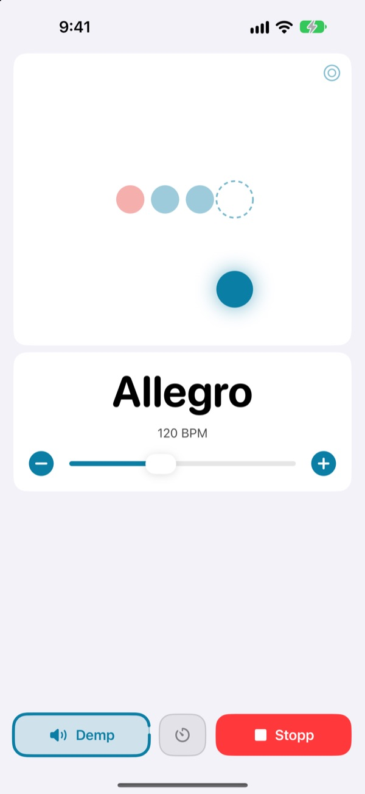
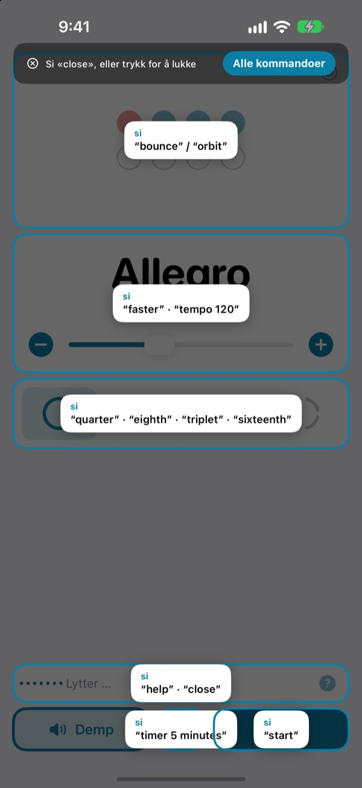
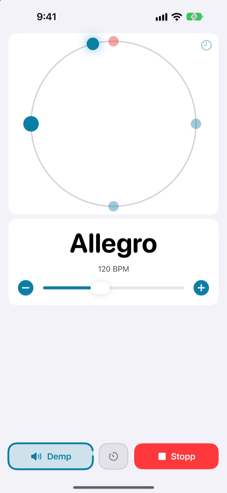
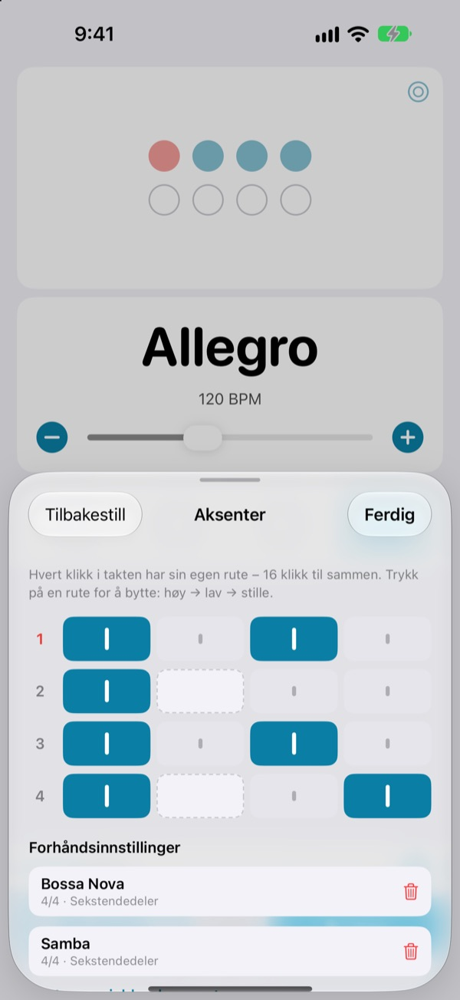

Hendene på instrumentet.
Tempoet med stemmen.
Si faster midt i frasen, så går klikket fortere. Du slipper å stoppe eller strekke deg etter skjermen. Kommandoene er korte engelske ord.
Hele metronomen og stemmestyringen er gratis.

Prøv det høyt
Trykk på en kommando, eller slå på mikrofonen og si den på engelsk. Skru opp lyden, den klikker.
Har du mistet flyten bare for å justere tempoet?
Legg fra deg buen, bit i plekteret, trykk to ganger på skjermen, og følelsen du nettopp fant, er borte. Med Not My Tempo bytter du tempo med ett ord, akkurat der du står.
Si det, så følger den med
Korte engelske ord som start, faster og tempo 120. Appen lytter så snart du åpner den, uten at du må slå på Stemmestyring i iOS eller en tilgjengelighetsinnstilling.
Glemt en kommando? Si help, så vises alt du kan si, på skjermen.

Se slaget også
Velg mellom sprett, bane og ring. Første slag er rødt og klikker kraftigere.
Trykk med på banen, og se hvor nær du traff.

Lagre aksentene for hver sang
Sett hvert klikk i takten til høyt, lavt eller stille, og lagre det som en forhåndsinnstilling. Lag bossanova- eller sambamønsteret én gang, og bare velg det neste gang. (Pro)

Tre steg, så er du i gang
- 1
Åpne appen
Den begynner å lytte med en gang.
- 2
Gi tilgang til mikrofonen
Den spør én gang om mikrofon og talegjenkjenning.
- 3
Snakk eller trykk
Alle kommandoer har også en knapp på skjermen.
Dette kan du si
- start · stop
- spill av, pause
- faster · slower
- 5 BPM fortere eller saktere
- up · down
- 1 BPM fortere eller saktere
- tempo 120
- hopp rett til et tempo
- double · half
- dobbelt så fort, halvt så fort
- three beats
- bytt taktart
- quarter · eighth · triplet · sixteenth
- underdeling i firedeler, åttedeler, trioler, sekstendedeler
- louder · quieter · mute
- klikket høyere, lavere, demp
- volume 60
- still inn volumet i prosent
- bounce · orbit
- bytt slagvisning
- timer 5 minutes
- still inn en øvingstimer
- practice
- tempoet øker mens du øver (Pro)
- tune
- åpne stemmeapparatet (Pro)
- help
- vis alle kommandoer
- close · done
- lukk et panel
Talegjenkjenningen bruker amerikansk engelsk, så kommandoene sier du på engelsk. Resten av appen er på norsk, og alle kommandoer kan også gis med et trykk.
Metronomen er gratis. Pro er der når du vil ha mer.
Gratis
- Alle stemmekommandoer
- Taktarter fra 1 til 8 slag, med betont første slag
- Underdeling i firedeler, åttedeler, trioler og sekstendedeler
- Tre visninger: sprett, bane og ring
- Tapp tempo og timingsjekk
- Øvingstimer
Not My Tempo Pro
- Øvingsmodus: legger på noen få BPM med noen takters mellomrom til du når måltempoet
- Aksenteditor med forhåndsinnstillinger for hver sang
- Kromatisk stemmeapparat
Årsabonnement med gratis prøveperiode, eller et engangskjøp for alltid
Stemmestyring og tilgjengelighetsfunksjoner forblir gratis for alle. Kjøpte du appen før Pro fantes? Da har du allerede alle Pro-funksjonene.
Vanlige spørsmål
Kan jeg snakke norsk?
Talegjenkjenningen bruker amerikansk engelsk, så kommandoene er korte engelske ord som start og faster. De sitter fort, og alle kommandoer kan også gis med et trykk. Resten av appen er på norsk.
Den hører meg ikke.
Sjekk at mikrofonstatusen er «Lytter». Hvis den er av, trykker du på «Lytt». I et støyende rom eller når du spiller gjennom høyttaler, hjelper hodetelefoner, så klikket ikke lekker inn i mikrofonen.
Lyttingen slo seg av av seg selv.
For å spare batteri slutter lyttingen hvis det ikke kommer noen kommando på noen minutter. Trykk på «Lytt» for å slå den på igjen.
Tempoet ble det halve eller det doble.
Si double eller half for å rette det.
Hvordan bruker jeg stemmeapparatet?
Si tune, eller trykk på bølgeknappen på tempokortet. Spill en tone: Når indikatoren kommer inn i den grønne sonen, er du stemt rent. Si close for å lukke.
Jeg bruker allerede Stemmestyring i iOS.
Slå av appens egen mikrofon, og styr den med navnene på knappene. Alle kontroller har VoiceOver-etiketter.
Blir stemmen min sendt noe sted?
Nei. Tale gjenkjennes på enheten din og blir aldri tatt opp, lagret eller lastet opp. Metronomen, stemmestyringen og stemmeapparatet virker uten internett.
Hvordan sier jeg opp abonnementet?
I Innstillinger > Apple-konto > Abonnementer. Årsabonnementet fornyes automatisk med mindre du sier det opp minst 24 timer før perioden går ut. Kjøp for alltid betales én gang.
Spørsmål eller tilbakemeldinger? Skriv til leeo@kakao.com.